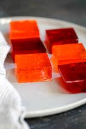

jello
jello isn't the worst of all desserts. but, it definitely is NOT the best. jello has a very unsatisfying and gross consistency. when eating it, it feels like you're eating some kind of mushy, slimy, gross food--and its NOT a good feeling. it also tastes overly sugary.
"jello is nasty, and you often gag when you eat it." - avery nordenfelt
because jello is insanely disgusting yet it can have a good side, i would rate it:
5/10
..................................................................................
again, if you feel like punishing yourself by eating disgusting jello, heres a link to a supposedly good Jello recipe: sally's baking addiction coconut cake